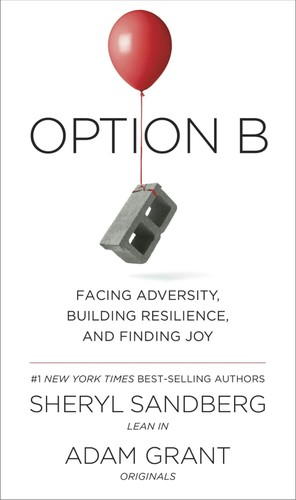

For Those Who Grieve
Grief Resources
A gathering of writing, conversations, and books that others have found comforting in the wake of a loss. We will continue to add to this list.
Podcast · The New York Times
Ask Me About My Dead Son
How to show up for someone who’s grieving the loss of a child.
PDF · Handout
Healing Feelings Handout
A printable handout for naming difficult feelings and finding gentle ways through them.
PDF · Handout
10 Basic Principles of Kids and Teens in Grief
How children and teenagers move through grief, and how to walk alongside them.
PDF · Handout
Comforting a Grieving Individual
Gentle, practical ways to show up for someone who is grieving.
Document · Guide
A Guide to Grief for Kids and Adults
Talking with children about death, and making room for grief at any age.

Book · Sheryl Sandberg & Adam Grant Option B: Facing Adversity, Building Resilience, and Finding Joy On facing loss, building resilience, and finding meaning and joy again.Organization · Grief Support
Kara
A community offering grief support groups, counseling, and resources for children, teens, and adults.